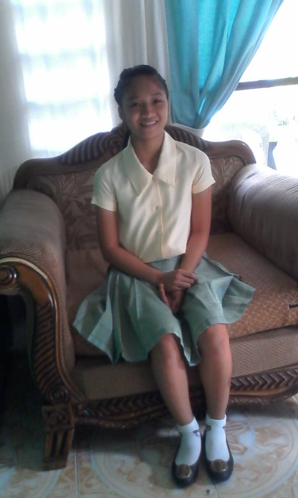

 My Elementary days was a lot of adjustment because when I was in my 1st grade I leave in Surigao del Sur. Staying in Mindanao is fun and at the same time there is a family problem, but I didn't know about it because I was still a kid back then. When I'm in 2nd grade we moved in Cebu city, where we starting to have a new life, and then transferred school in my 3rd grade and we move to Mandaue city. Where I enjoy the rest of my Elementary days, playing "dampa", "takyan", and "volleyball". Make some friends,and we play when the clock hit at 4:oo o'clock in the afternoon. And when I'm in my 6th grade I start to join in volleyball team, and start to train as a player, we have training everyday at 6:00 o'clock in the morning to,7:00 AM, then going back to train in the 4:00 o'clock in the afternoon to 6:00 PM in the evening. And then we compete in District Meet we play against different schools and we win in all of our match, then until we compete in Division Meet but we lose. But I'm happy that I able to experience this kind of competition in volleyball.